Breakthroughs in Reliability#
“Probabilistic logics and the synthesis of reliable organisms from unreliable components.” – John von Neumann, title of his 1956 paper
Reliability engineering asks how long things last and how to make systems
that last longer than their parts. Its mathematics began with life
insurance: the first life tables were estimates of a hazard rate. Poisson
supplied the law of rare events, and after the Second World War aircraft
structures, vacuum-tube electronics and missiles turned these ideas into a
discipline. Engineers learned to fit lifetime distributions to censored
test data, to accelerate tests with heat and voltage, to combine components
into series, parallel, voting and general networks, to list failure modes
and trace accidents through fault and event trees, to sample what they
could not linearise, and to schedule repair and replacement. The entries trace the ideas behind
engineeringkit.reliability. Each links to the implementing function
and to a gallery example devoted to it.
1693 – Halley’s Life Table and the Hazard Rate#
Edmond Halley obtained five years of births and burials from the city of Breslau, a population with little migration, and tabulated how many of 1000 one-year-olds would still be alive at each later age. He used the table to price life annuities. The fraction of those alive at one age who die before the next is the probability of failing in that interval given survival so far, which reliability engineers call the hazard rate. Halley’s hazard falls through childhood, is lowest around age ten and then rises steadily: the bathtub shape that also describes many machines, with early failures, a long period of random ones and wear-out.
Implementation: engineeringkit.reliability.life_table_hazard() and
engineeringkit.reliability.bathtub_hazard(). The example computes the
hazard from Halley’s table and fits a bathtub curve through it.
References: E. Halley, “An estimate of the degrees of the mortality of mankind, drawn from curious tables of the births and funerals at the city of Breslaw,” Phil. Trans. R. Soc. 17 (1693) 596-610.
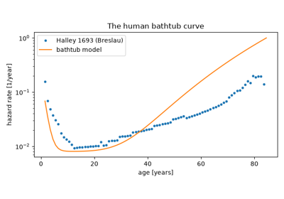
Halley’s life table and the hazard rate (1693)
1837 – Poisson’s Law of Rare Events#
Siméon Denis Poisson, studying the verdicts of juries, derived the limit of the binomial distribution when there are many trials and each success is rare: the number of events in a fixed exposure has probability \((\lambda T)^k e^{-\lambda T}/k!\). A fleet of units that fail independently at a constant rate is exactly this situation, with \(\lambda T\) expected failures over a total operating time \(T\). The distribution sizes spare-parts kits and underlies every test of a constant failure rate.
Implementation: engineeringkit.reliability.poisson_failures_probability()
and engineeringkit.reliability.expected_failures(). The example
simulates failures with exponential gaps, checks the count distribution and
sizes a spares kit.
References: S. D. Poisson, Recherches sur la probabilité des jugements en matière criminelle et en matière civile (Bachelier, Paris, 1837), §81.
1879 – McAlister’s Lognormal Law#
Francis Galton asked when the geometric mean is the right average, and Donald McAlister, at his request, worked out the law of errors that makes it so: if a quantity is the product of many small independent factors, its logarithm is normally distributed. The lognormal distribution has a hazard that rises to a peak and then falls. In reliability it became the model for failure mechanisms that grow in multiplicative steps, such as fatigue cracks, corrosion and electromigration, and for repair times. The gamma distribution, the life of several exponential stages in sequence, completes the standard set of lifetime laws.
Implementation: engineeringkit.reliability.lognormal_reliability(),
engineeringkit.reliability.lognormal_cdf(),
engineeringkit.reliability.lognormal_hazard() and
engineeringkit.reliability.lognormal_mttf(), with
engineeringkit.reliability.gamma_reliability(),
engineeringkit.reliability.gamma_cdf(),
engineeringkit.reliability.gamma_hazard() and
engineeringkit.reliability.gamma_mttf(). The example builds lives as
products of random factors, checks that their logarithms are normal and
compares the lognormal hazard with a Weibull one.
References: D. McAlister, “The law of the geometric mean,” Proc. R. Soc. Lond. 29 (1879) 367-376, which follows F. Galton, “The geometric mean, in vital and social statistics,” ibid. 365-367.
1889 – Arrhenius’s Law and Accelerated Life Testing#
Svante Arrhenius measured how fast acids invert cane sugar and found the rate rising with temperature as \(e^{-E_a/(k_B T)}\), where the activation energy \(E_a\) is the barrier a molecule must cross. Many failure mechanisms in electronics, such as diffusion, corrosion and the growth of intermetallic layers, are chemical reactions, so a part’s life scales as \(e^{E_a/(k_B T)}\). Reliability engineers turned the law into the acceleration factor of a high-temperature test, which compresses years of service into weeks, and fit \(E_a\) from lives measured at several temperatures.
Implementation: engineeringkit.reliability.arrhenius_acceleration_factor()
and engineeringkit.reliability.arrhenius_fit(). The example tests
capacitors at three temperatures, fits a Weibull scale at each, recovers
the activation energy and predicts the life at 55 °C.
References: S. Arrhenius, “Über die Reaktionsgeschwindigkeit bei der Inversion von Rohrzucker durch Säuren,” Z. Phys. Chem. 4 (1889) 226-248; W. Nelson, Accelerated Testing (Wiley, New York, 1990), ch. 2.
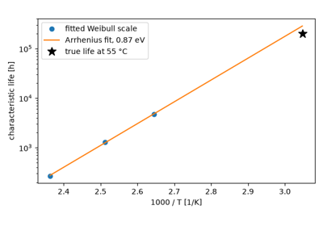
Arrhenius’s law and accelerated life testing (1889)
1935 – Eyring’s Activated Complex#
Henry Eyring derived reaction rates from statistical mechanics. Reactants pass through an activated complex at the top of the energy barrier, and the rate is \((k_B T/h)\,e^{-\Delta G^\ddagger/(k_B T)}\), with a prefactor proportional to temperature that Arrhenius’s empirical law lacks. Applied to life testing, the theory gives \(L \propto T^{-1} e^{E_a/(k_B T)}\). Its generalised form multiplies in a factor for each non-thermal stress, such as voltage or humidity, often as an inverse power law \(L \propto V^{-n}\).
Implementation: engineeringkit.reliability.eyring_acceleration_factor()
and engineeringkit.reliability.inverse_power_law_acceleration_factor().
The example shows that an Arrhenius fit to Eyring lives needs an activation
energy larger by about \(k_B T\), and combines temperature and voltage
acceleration.
References: H. Eyring, “The activated complex in chemical reactions,” J. Chem. Phys. 3 (1935) 107-115.
1947 – Freudenthal’s Stress-Strength Interference#
Alfred Freudenthal argued that a structure’s safety factor, mean strength over mean load, cannot measure its safety: two designs with the same factor fail at very different rates if their loads and strengths scatter differently. Safety is the probability that strength exceeds load, which depends on how far the two distributions overlap. For independent normal variables it is \(\Phi(\beta)\) with \(\beta = (\mu_S - \mu_s)/\sqrt{\sigma_S^2 + \sigma_s^2}\). The paper started probabilistic structural design.
Implementation: engineeringkit.reliability.stress_strength_reliability().
The example checks the closed form by Monte Carlo and shows two designs
with the same safety factor and different reliabilities.
References: A. M. Freudenthal, “The safety of structures,” Trans. ASCE 112 (1947) 125-159.
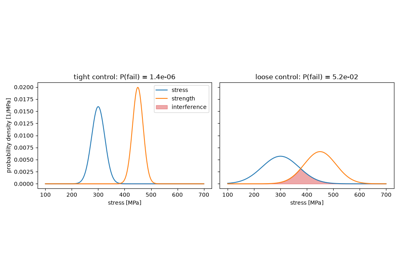
Freudenthal’s stress-strength interference (1947)
1949 – Metropolis and Ulam’s Monte Carlo Method#
Stanislaw Ulam, playing solitaire while recovering from an illness, wondered whether it was easier to estimate the chance of winning by dealing many games than by combinatorics. At Los Alamos he and John von Neumann used the idea for neutron diffusion, and Nicholas Metropolis and Ulam described it in print as the Monte Carlo method. A structure’s failure probability is the fraction of sampled loads and resistances that fail. The estimate needs no linearisation, which makes it the check on first-order methods, but its relative error falls only as \(1/\sqrt{N p_f}\). Importance sampling around the most likely failure point, a later refinement, removes most of that cost.
Implementation: engineeringkit.reliability.monte_carlo_failure_probability(),
which returns a MonteCarloResult. The
example estimates the failure probability of a tie with a curved limit
state, compares it with the Hasofer-Lind result and shows how much faster
importance sampling at the design point converges.
References: N. Metropolis and S. Ulam, “The Monte Carlo method,” J. Amer. Statist. Assoc. 44 (1949) 335-341; G. Harbitz, “An efficient sampling method for probability of failure calculation,” Struct. Saf. 3 (1986) 109-115.
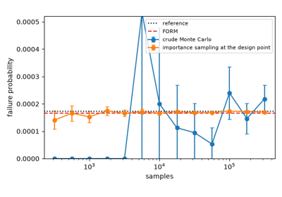
Metropolis and Ulam’s Monte Carlo method (1949)
1949 – MIL-P-1629: Failure Mode and Effects Analysis#
The US military procedure MIL-P-1629, Procedures for Performing a Failure Mode, Effects and Criticality Analysis, dated 9 November 1949, asked designers to go through a system part by part, list each way the part could fail, trace the effect of each failure and classify it by its consequence for the mission and for personnel. NASA contractors used the method on Apollo, MIL-STD-1629A (1980) added the criticality number \(C_m = \beta\alpha\lambda_p t\), and the automotive industry later ranked modes by a risk priority number, the product of severity, occurrence and detection scores from 1 to 10. Because the scores are ordinal, a severe mode needs attention whatever its product.
Implementation: engineeringkit.reliability.risk_priority_number(),
engineeringkit.reliability.fmea_ranking(), which returns an
FMEAResult with a Pareto chart, and
engineeringkit.reliability.failure_mode_criticality(). The example
ranks the failure modes of a pump and shows a mode that the RPN places last
and severity places first.
References: U.S. Department of Defense, Procedures for Performing a Failure Mode, Effects and Criticality Analysis (MIL-P-1629, 9 November 1949); MIL-STD-1629A (24 November 1980). The 1949 text could not be found; its date and title are taken from secondary sources and O’Connor and Kleyner, Practical Reliability Engineering (5th ed., Wiley, 2012), §7.3.
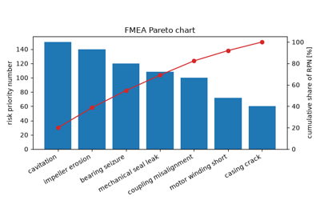
MIL-P-1629’s failure mode and effects analysis (1949)
1951 – Weibull’s Distribution#
Waloddi Weibull proposed a distribution, \(R(t) = e^{-(t/\eta)^\beta}\), for data as varied as the yield strength of steel, the size of fly ash and the fatigue life of bearings. Its shape parameter sets the hazard: falling for \(\beta < 1\), constant for \(\beta = 1\) and rising above. Because \(\ln(-\ln R)\) is linear in \(\ln t\), data can be fitted with a ruler on Weibull probability paper. The distribution became the standard model of component life.
Implementation: engineeringkit.reliability.weibull_reliability(),
engineeringkit.reliability.weibull_cdf(),
engineeringkit.reliability.weibull_hazard() and
engineeringkit.reliability.weibull_mttf(). The example fits a small
life test on Weibull axes and compares the mean life with the gamma-function
formula.
References: W. Weibull, “A statistical distribution function of wide applicability,” J. Appl. Mech. 18 (1951) 293-297.
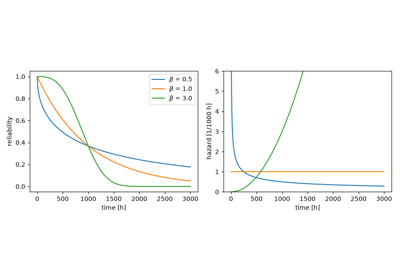
Weibull’s distribution and the Weibull plot (1951)
1951 – Johnson’s Median Ranks#
Before a line can be drawn on Weibull paper, each failure needs a plotting position. Leonard Johnson, studying the fatigue of ball bearings at General Motors, noted that the fraction of the population failed at the \(i\)-th of \(n\) failures has a \(\mathrm{Beta}(i, n-i+1)\) distribution, and proposed its median, the median rank, as the position. Benard’s \((i - 0.3)/(n + 0.4)\) approximates it within a fraction of a percent. Johnson later gave adjusted ranks for censored samples: a unit removed before failing raises the order numbers of every later failure. Median-rank regression became the standard Weibull analysis in industry.
Implementation: engineeringkit.reliability.median_ranks(),
engineeringkit.reliability.adjusted_ranks() and
engineeringkit.reliability.weibull_rank_regression(), which returns
a WeibullFitResult that draws the
probability plot. The example checks the median ranks by simulation and
fits a censored bearing test.
References: L. G. Johnson, “The median ranks of sample values in their population with an application to certain fatigue studies,” Industrial Mathematics 2 (1951) 1-9, and The Statistical Treatment of Fatigue Experiments (Elsevier, Amsterdam, 1964), ch. 3. The 1951 paper could not be found; its citation is the one given in later Weibull handbooks. A. Benard and E. C. Bos-Levenbach, “Het uitzetten van waarnemingen op waarschijnlijkheids-papier,” Statistica Neerlandica 7 (1953) 163-173.
1953 – Epstein and Sobel’s Exponential Life Testing#
Benjamin Epstein and Milton Sobel worked out how to demonstrate a mean life from a test that is stopped before every unit has failed. For exponential lives the total time on test, summed over failed and surviving units, carries all the information. The MTBF estimate is that time divided by the number of failures \(r\), and twice the total time over the true MTBF is chi-square with \(2r\) degrees of freedom, which gives exact confidence bounds. Their results became the basis of the US military’s reliability demonstration plans.
Implementation: engineeringkit.reliability.exponential_reliability(),
engineeringkit.reliability.exponential_mttf(),
engineeringkit.reliability.failure_rate_from_mtbf() and
engineeringkit.reliability.mtbf_confidence_bounds(). The example
repeats a failure-terminated test many times and checks the coverage of the
90% bounds.
References: B. Epstein and M. Sobel, “Life testing,” J. Amer. Statist. Assoc. 48 (1953) 486-502.
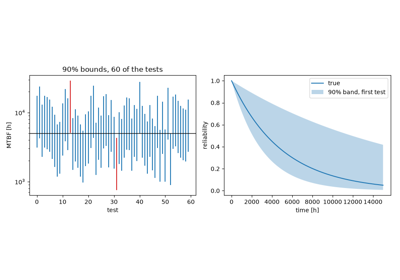
Epstein and Sobel’s exponential life testing (1953)
1956 – Von Neumann’s Redundancy#
John von Neumann asked how a computer, or a brain, can work when each of its components is unreliable. Active parallel redundancy, \(1 - (1 - r)^n\), survives if any copy survives. For logic, where a wrong output is as bad as none, he used majority voting: three copies and a voter work with probability \(3r^2 - 2r^3\). Voting on voters drives the error toward zero, but only if each part is right more than half the time. The paper founded the theory of fault-tolerant computing.
Implementation: engineeringkit.reliability.parallel_reliability().
The example compares parallel and triple-modular redundancy and iterates
the majority vote.
References: J. von Neumann, “Probabilistic logics and the synthesis of reliable organisms from unreliable components,” in C. E. Shannon and J. McCarthy (eds.), Automata Studies (Princeton University Press, 1956) 43-98.
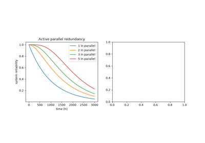
Von Neumann’s reliable machines from unreliable parts (1956)
1957 – The AGREE Report: Series Systems and MTBF#
In the early 1950s much of the US forces’ electronic equipment was out of service at any one time, mostly because of vacuum-tube failures. The Advisory Group on Reliability of Electronic Equipment (AGREE) recommended that reliability be specified as a number in contracts, predicted from parts counts and demonstrated by test. Its model was a series system of parts with constant failure rates: the system’s failure rate is the sum of the parts’ rates and its MTBF the reciprocal, so reliability falls with every part added.
Implementation: engineeringkit.reliability.series_reliability(),
engineeringkit.reliability.exponential_hazard() and
engineeringkit.reliability.exponential_failure_probability(). The
example makes a parts-count prediction for a receiver and checks it
against the product of the parts’ reliabilities.
References: Advisory Group on Reliability of Electronic Equipment, Reliability of Military Electronic Equipment (Office of the Assistant Secretary of Defense, Washington, 4 June 1957).
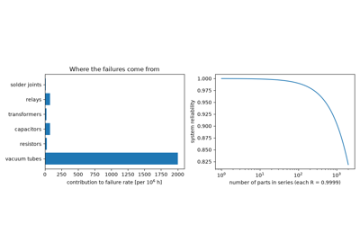
The AGREE report: series systems and MTBF (1957)
1958 – Kaplan and Meier’s Product-Limit Estimator#
Field and clinical data are incomplete: some units are still working when the data are collected and others are withdrawn for reasons other than failure. Edward Kaplan and Paul Meier estimated the survival function by multiplying the conditional survival \(1 - d_j/n_j\) at each failure time, where \(n_j\) counts only the units still under observation. The estimator uses every censored unit for as long as it was observed. Their paper became one of the most cited in statistics.
Implementation: engineeringkit.reliability.kaplan_meier(), which
returns a KaplanMeierResult with
Greenwood’s standard errors. The example censors a Weibull sample at random
and recovers the true survival curve.
References: E. L. Kaplan and P. Meier, “Nonparametric estimation from incomplete observations,” J. Amer. Statist. Assoc. 53 (1958) 457-481.
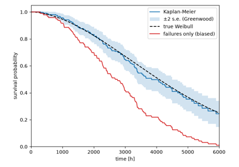
Kaplan and Meier’s product-limit estimator (1958)
1961 – Birnbaum, Esary and Saunders’s k-out-of-n Systems#
Zygmunt Birnbaum, James Esary and Sam Saunders put system reliability on a general footing. A structure function says which combinations of working components keep the system working, and for independent components the system’s reliability follows from it. The \(k\)-out-of-\(n\) system, which works if at least \(k\) of its \(n\) identical components do, runs from parallel (\(k = 1\)) to series (\(k = n\)), and its reliability is a binomial tail.
Implementation: engineeringkit.reliability.k_of_n_reliability().
The example checks the binomial formula by enumerating component states and
computes the mean life of each architecture.
References: Z. W. Birnbaum, J. D. Esary and S. C. Saunders, “Multi-component systems and structures and their reliability,” Technometrics 3 (1961) 55-77.
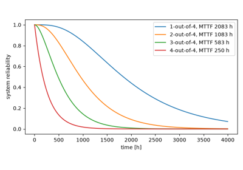
Birnbaum, Esary and Saunders’s k-out-of-n systems (1961)
1961 – Watson’s Fault Tree#
The US Air Force asked Bell Telephone Laboratories whether the Minuteman launch-control system could launch a missile without a valid order. H. A. Watson answered with a new diagram that starts from the undesired top event and works down through AND and OR gates to basic failures with known probabilities. Boeing extended the method to the whole Minuteman system, and David Haasl presented it at the first System Safety Symposium in 1965. Fault trees became standard in aerospace and nuclear safety. An event that feeds more than one branch makes the gate inputs dependent, so the tree must then be evaluated over the states of its basic events.
Implementation: engineeringkit.reliability.fault_tree_probability().
The example evaluates a tree with a repeated event exactly, checks it by
Monte Carlo and shows the error of combining the gates as if independent.
References: H. A. Watson, Launch Control Safety Study (Bell Telephone Laboratories, Murray Hill, 1961); D. F. Haasl, “Advanced concepts in fault tree analysis,” System Safety Symposium (Seattle, 1965).
1961 – Raiffa and Schlaifer’s Conjugate Priors#
Howard Raiffa and Robert Schlaifer, at the Harvard Business School, built a practical Bayesian decision theory and catalogued the conjugate families, priors that a given likelihood maps into the same family. For failures arriving as a Poisson process the conjugate prior on the rate is the gamma distribution, and the update is two additions: \(r\) failures in time \(T\) turn \(\mathrm{Gamma}(a, b)\) into \(\mathrm{Gamma}(a + r, b + T)\). Reliability engineers use it to combine handbook or similar-part data with short tests of a new design, and in nuclear and aerospace risk assessment to update generic failure rates with plant data.
Implementation: engineeringkit.reliability.bayesian_failure_rate(),
which returns a FailureRatePosterior,
and engineeringkit.reliability.gamma_prior_from_bounds(). The example
sets a prior from an engineer’s median and upper bound, updates it with a
short and a long test, and recovers the chi-square bounds with vague
priors.
References: H. Raiffa and R. Schlaifer, Applied Statistical Decision Theory (Division of Research, Harvard Business School, Boston, 1961), ch. 3 and 7.
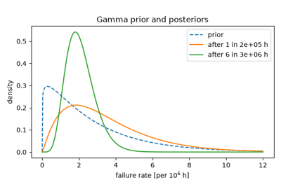
Raiffa and Schlaifer’s conjugate prior for a failure rate (1961)
1963 – Esary and Proschan’s Path and Cut Bounds#
Most block diagrams are neither series nor parallel, the bridge network being the classic example. James Esary and Frank Proschan, at Boeing, described any coherent system by its minimal path sets, the smallest groups of components whose working keeps the system working, and its minimal cut sets, the smallest groups whose failure stops it. The system is a parallel arrangement of its paths and a series arrangement of its cuts, but paths and cuts share components. Treating them as independent gives a lower bound from the cuts and an upper bound from the paths, and the cut bound is close to exact when components are reliable.
Implementation: engineeringkit.reliability.minimal_path_sets(),
engineeringkit.reliability.minimal_cut_sets(),
engineeringkit.reliability.network_reliability() and
engineeringkit.reliability.esary_proschan_bounds(). The example
finds the paths and cuts of the bridge, checks its reliability polynomial
and compares both bounds with the exact result.
References: J. D. Esary and F. Proschan, “Coherent structures of non-identical components,” Technometrics 5 (1963) 191-209.
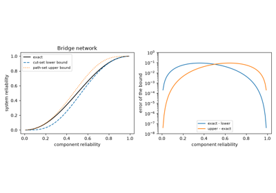
Esary and Proschan’s path and cut bounds (1963)
1964 – Duane’s Reliability Growth#
James Duane, at General Electric, plotted the failure records of several development programmes, from hydraulic devices to aircraft generators. On log-log paper the cumulative MTBF, total test time over total failures, rose along a straight line, \(\theta_c = K t^\alpha\). The instantaneous MTBF is \(\theta_c/(1 - \alpha)\), and the line tells a programme how much more testing a reliability target needs. Larry Crow later recast the model as a non-homogeneous Poisson process (the AMSAA model).
Implementation: engineeringkit.reliability.reliability_growth_duane().
The example simulates a power-law failure process, fits Duane’s line and
predicts the test time needed to reach a target MTBF.
References: J. T. Duane, “Learning curve approach to reliability monitoring,” IEEE Trans. Aerospace 2 (1964) 563-566.
1965 – Barlow and Proschan’s Age Replacement#
Richard Barlow and Frank Proschan’s Mathematical Theory of Reliability used renewal theory to decide when a part should be replaced before it fails. Under an age-replacement policy a part is replaced at failure or at age \(T\), whichever comes first. The long-run cost rate is the expected cost per cycle over the expected cycle length, and it has a finite minimum only if the hazard rises and a failure costs more than a planned replacement. With a constant hazard a new part is no better than the old one, so planned replacement never pays.
Implementation: engineeringkit.reliability.age_replacement_cost_rate()
and engineeringkit.reliability.renewal_interval_cost_rate(). The
example finds the optimum replacement age of a Weibull part, checks the
optimality condition and confirms the cost rate by simulation.
References: R. E. Barlow and F. Proschan, Mathematical Theory of Reliability (Wiley, New York, 1965), ch. 4.
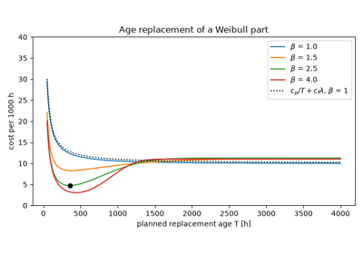
Barlow and Proschan’s age replacement (1965)
1965 – Markov Models of Repairable Systems#
A unit that fails and is repaired at constant rates is a continuous-time Markov chain, and so is any system of such units. Barlow and Proschan gave the availability of a single unit, which decays from one to the steady state \(\mu/(\lambda + \mu)\) with time constant \(1/(\lambda + \mu)\), and treated larger systems through their transition-rate matrices. The state probabilities are the matrix exponential of that matrix applied to the initial state, and setting their derivatives to zero gives the long-run balance equations.
Implementation: engineeringkit.reliability.markov_availability(),
engineeringkit.reliability.markov_state_probabilities(),
engineeringkit.reliability.availability(),
engineeringkit.reliability.unavailability(),
engineeringkit.reliability.repair_rate() and
engineeringkit.reliability.maintainability(). The example checks the
closed form against the matrix exponential and solves two pumps with one
repair crew.
References: R. E. Barlow and F. Proschan, Mathematical Theory of Reliability (Wiley, New York, 1965), ch. 5.
1965 – Cohen’s Maximum Likelihood for Censored Weibull Data#
Rank regression uses a censored unit only through the ranks of later failures, and its estimates scatter widely when most units survive the test. A. Clifford Cohen, at the University of Georgia, wrote out the maximum-likelihood equations of the Weibull distribution for complete, singly censored and progressively censored samples. Each failure contributes its density and each survivor its reliability, so a unit still running when the test stops counts for the time it survived. The shape solves one equation in \(\beta\) alone, and Cohen also gave the asymptotic variances of the estimates. Opening his paper he named parameter estimation as the main obstacle to wider use of the Weibull distribution.
Implementation: engineeringkit.reliability.weibull_mle(). The
example repeats a test in which most units survive and shows that the
maximum-likelihood shape scatters less than the rank-regression one.
References: A. C. Cohen, “Maximum likelihood estimation in the Weibull distribution based on complete and on censored samples,” Technometrics 7 (1965) 579-588.
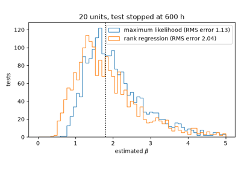
Cohen’s maximum likelihood for censored Weibull data (1965)
1969 – Birnbaum’s Component Importance#
Which component should be improved first? Z. W. Birnbaum defined a component’s importance as the rate at which the system’s reliability changes with that component’s reliability, \(I_i = \partial R_s/\partial R_i\). It equals the probability that the component is critical, that the system works if it works and fails if it fails. In a series system the importance is the product of the other components’ reliabilities, so the weakest part matters most.
Implementation: engineeringkit.reliability.birnbaum_importance_series().
The example checks the derivative numerically and shows that improving the
most important component gains the most.
References: Z. W. Birnbaum, “On the importance of different components in a multicomponent system,” in P. R. Krishnaiah (ed.), Multivariate Analysis II (Academic Press, New York, 1969) 581-592.
1974 – Hasofer and Lind’s Reliability Index#
C. Allin Cornell’s 1969 reliability index, the mean of the safety margin over its standard deviation, depends on how the failure condition is written. Abraham Hasofer and Niels Lind removed the ambiguity by transforming to standard normal variables and measuring the shortest distance from the origin to the failure surface. The nearest point, the design point, is the most likely way to fail, and \(\Phi(-\beta)\) approximates the failure probability. The index is the basis of the first-order reliability method used to calibrate modern structural codes.
Implementation: engineeringkit.reliability.hasofer_lind_index(),
which returns a HasoferLindResult,
with engineeringkit.reliability.failure_probability_from_index() and
engineeringkit.reliability.reliability_index_from_probability(). The
example shows that Cornell’s index changes with the formulation and
Hasofer and Lind’s does not, and checks the design point by Monte Carlo.
References: A. M. Hasofer and N. C. Lind, “Exact and invariant second-moment code format,” J. Eng. Mech. Div. ASCE 100 (1974) 111-121.
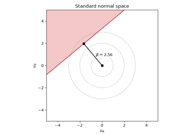
Hasofer and Lind’s reliability index (1974)
1975 – WASH-1400: Event Trees#
The Reactor Safety Study, led by Norman Rasmussen for the US Nuclear Regulatory Commission, was the first attempt to put a number on the risk of a nuclear power plant. It worked forward from each initiating event, such as a pipe break, and asked in turn whether each safety system worked. Every path through the resulting event tree is an accident sequence whose frequency is the initiator’s frequency times its branch probabilities, and fault trees supplied the branch probabilities. The study’s uncertainty bounds were criticised, but the 1979 accident at Three Mile Island followed a small-break sequence of the kind it had ranked high, and probabilistic risk assessment became regulatory practice.
Implementation: engineeringkit.reliability.event_tree_probability(),
which returns an EventTreeResult. The
example quantifies a loss-of-coolant tree and checks the core damage
frequency against inclusion and exclusion.
References: U.S. Nuclear Regulatory Commission, Reactor Safety Study: An Assessment of Accident Risks in U.S. Commercial Nuclear Power Plants (WASH-1400, NUREG-75/014, 1975).
1998 – IEC 61508 and Safety Integrity Levels#
Programmable electronics took over process trips, railway signalling and machine guards, and there was no agreed way to say how safe a software-based protection system was. The International Electrotechnical Commission’s standard IEC 61508 grades each safety function by the risk reduction it must achieve, in four safety integrity levels. For a function that acts on rare demands the measure is its average probability of failure on demand. A dangerous fault that no self-test detects stays hidden until the next proof test, so a single channel averages \(\lambda_{DU} T/2\) over a test interval \(T\).
Implementation: engineeringkit.reliability.safety_integrity_pfd()
and engineeringkit.reliability.safety_integrity_level(). The example
checks the approximation against the exact time average and shows how
common-cause failures limit a redundant pair.
References: IEC 61508, Functional safety of electrical/electronic/ programmable electronic safety-related systems (International Electrotechnical Commission, Geneva, 1998-2000; 2nd ed. 2010), part 6, annex B.
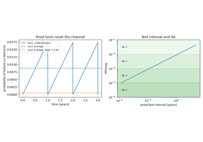
IEC 61508 and safety integrity levels (1998)